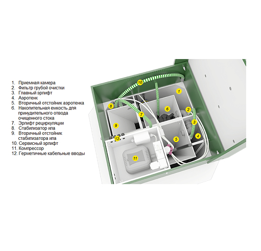

<section class="section about-section mb-100">
	<div class="block-container">
		<div class="about-block">
			<div class="about-block__image">
				
			</div>
			<div class="about-block__content">
				<div class="block-heading">
					<h2 class="block-heading__title">Преимущества станции Биодека-3</h2>
				</div>
				<ul class="checkmark-list">
					<li class="checkmark-list__item">Очистка стоков до 98% с использованием аэробных бактерий</li>
					<li class="checkmark-list__item">Однорежимная схема с одним компрессором, отсутствие часто ломающихся узлов
					</li>
					<li class="checkmark-list__item">Эффективность работы в условиях любых почв и климата</li>
					<li class="checkmark-list__item">Тихая работа без запахов</li>
					<li class="checkmark-list__item">Цилиндрическая форма с ребрами жесткости хорошо сдерживает давление грунта
					</li>
					<li class="checkmark-list__item">Надежный материал, не подверженный коррозии и плесени</li>
				</ul>
			</div>
		</div>
	</div>
</section>